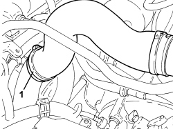
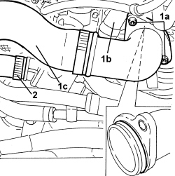
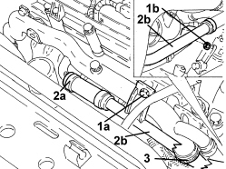
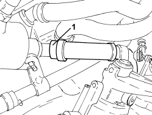
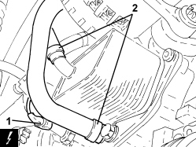
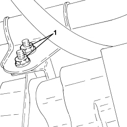
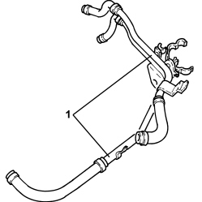

1088D56 ENGINE OIL HEAT EXCHANGER DELIVERY AND RETURN DUPLEX RIGID PIPING - R R
- Path
- Procedures > 10 ENGINE > 1088 ENGINE COOLING > 1088D COOLANT PIPES AND HOSES > 1088D56 ENGINE OIL HEAT EXCHANGER DELIVERY AND RETURN DUPLEX RIGID PIPING - R R
- Kind
- repair procedure (removal / refitting; the operation number is the code)
- Applies to
- engines: 1.9 JTD 8V, 1.9 JTD 16V; all production periods
- Interactive page
- https://sloeber94.github.io/elrnDB/alfa/159/en/#/939010689
Applies to: engines: 1.9 JTD 8V, 1.9 JTD 16V; all production periods
 Removing
Removing
 Refitting
Refitting- Position the vehicle on a lift.
Op. 1016A10 SOUND-PROOFING COVER - R.R
Op. 5530B52 BATTERY SUPPORT/DRIP TRAY - R.R
Op. 7055B54 UNDER ENGINE PROTECTION/GUARD - R.R.
1. Undo the radiator coolant drain plug.

Applies to: engines: 1.9 JTD 8V, 1.9 JTD 16V; all production periods
1. Loosen the band and disconnect the air supply hose from the rigid intermediate pipe to the rigid pipe on the throttle casing.

Applies to: engines: 1.9 JTD 8V, 1.9 JTD 16V; all production periods
1. Undo the bolts (1a) and remove the rigid air inlet pipe on the throttle casing (1b) complete with hose (1c).
2. Loosen the band and disconnect the upper coolant inlet hose to the radiator, thermostat side.

Applies to: engines: 1.9 JTD 8V, 1.9 JTD 16V; all production periods
1. Undo the bolt (1a) and the nut (1b) securing the water pump rigid intermediate supply pipe.
2. Loosen the band (2a) and move the water pump supply pipe (2b) to the side.
3. Loosen the band and disconnect the coolant delivery pipe from the coolant/exhaust gas heat exchanger for the EGR system, water pump rigid inlet pipe side.

Applies to: engines: 1.9 JTD 8V, 1.9 JTD 16V; all production periods
1. Loosen the band and disconnect the coolant supply pipe to the engine oil heat exchanger, thermostat side.

Applies to: engines: 1.9 JTD 8V, 1.9 JTD 16V; all production periods
1. Disconnect the electrical connection from the engine oil pressure warning light switch.
Description | Connector | |
|---|---|---|
1 | Insufficient engine oil pressure sensor (switch) |
2. Loosen the bands and disconnect the engine coolant inlet and outlet pipes from the engine oil heat exchanger.

Applies to: engines: 1.9 JTD 8V, 1.9 JTD 16V; all production periods
1. Undo the nuts fixing the duplex rigid engine oil heat exchanger supply and return pipe to the starter motor bracket.

Applies to: engines: 1.9 JTD 8V, 1.9 JTD 16V; all production periods
1. Remove the duplex engine oil heat exchanger rigid supply and return pipe complete with flexible hoses.

Applies to: engines: 1.9 JTD 8V, 1.9 JTD 16V; all production periods
Refitting
Removing- Place the duplex engine oil heat exchanger rigid supply and return pipe back in its housing complete with flexible hoses.
- Tighten the nuts fixing the duplex rigid engine oil heat exchanger supply and return pipe to the starter motor bracket.
- Connect the engine coolant inlet and outlet pipes to the engine oil heat exchanger and tighten the bands.
- Connect the electrical connection to the engine oil pressure warning light switch.
- Connect the coolant supply pipe to the engine oil heat exchanger, thermostat side, and tighten the band.
- Connect the coolant delivery pipe from the coolant/exhaust gas heat exchanger for the EGR system, water pump rigid inlet pipe side and tighten the band.
- Place the water pump supply pipe in its housing, connect it and tighten the band.
- Tighten the bolt and the nut securing the water pump rigid intermediate supply pipe.
- Connect the radiator upper coolant inlet hose, thermostat side, and tighten the band.
- Place the throttle casing rigid air inlet pipe in its housing complete with hose and tighten the bolts and the band.
- Tighten the coolant drain plug to the radiator.
Op. 5530B52 BATTERY SUPPORT/DRIP TRAY - R.R
Op. 0010T20 ENGINE COOLANT - CHANGE
Op. 7055B54 UNDER ENGINE PROTECTION/GUARD - R.R.
Op. 1016A10 SOUND-PROOFING COVER - R.R
- Remove the vehicle from the lift.
Topics linked from this page (6)
- 0010T20 ENGINE COOLANT - CHANGE
- 1016A10 SOUND-PROOFING COVER - R.R
- 5530B10 BATTERY - R+R
- 5530B52 BATTERY SUPPORT/DRIP TRAY - R.R
- 7055B54 UNDER ENGINE PROTECTION/GUARD - R.R.
- K030 LOW ENGINE OIL PRESSURE SENSOR (SWITCH)